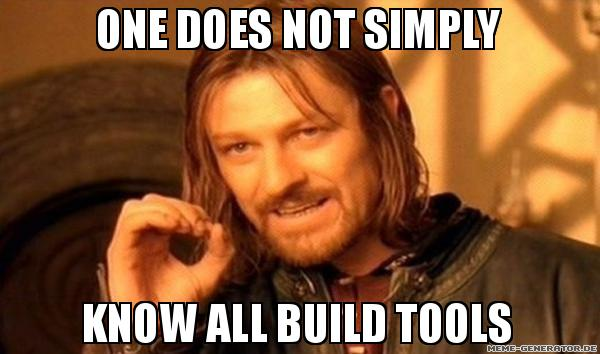

npm tooling
Roundup about Tasksrunner, Bundler, Transpiler, Manager
by Alexander Pinnecke and Stefan Schult
Who we are?
Alexander Pinnecke
Frontend-Developer @ etventure.com
Skills:
- first class javascript junkie
- meme generator user
- microservice desaster master
Stefan Schult
Frontend-Developer @ finanzcheck.de
Skills:
- Javascript since ever 1970-01-01 00:00:00 +00:00
- CSS magician 🔮
- bleeding edge technology guy
- finds new tools twice a day
first things first

Taskrunner
Grunt

module.exports = function(grunt) {
grunt.initConfig({
jshint: {
files: ['Gruntfile.js', 'src/**/*.js', 'test/**/*.js'],
options: {
globals: {
jQuery: true
}
}
},
watch: {
files: ['<%= jshint.files %>'],
tasks: ['jshint']
}
});
grunt.loadNpmTasks('grunt-contrib-jshint');
grunt.loadNpmTasks('grunt-contrib-watch');
grunt.registerTask('default', ['jshint']);
};gruntGulp

var concat = require('gulp-concat');
gulp.task('concat', function() {
return gulp.src('./lib/*.js')
.pipe(concat('all.js'))
.pipe(gulp.dest('./dist/'));
});gulp concatnpm scripts

"scripts": {
"concat": "cat 1.js 2.js > 0.js"
}npm run concatBundler
Browserify

// main.js
require('./1.js');
require('./2.js');browserify main.js -o bundle.jsWebpack

// webpack.config.js
module.exports = {
entry: './main.js',
output: {
filename: 'bundle.js'
}
};webpackRollup

Transpiler
Traceur

Traceur is a JavaScript.next-to-JavaScript-of-today compiler
Babel

Babel is a compiler for writing next generation JavaScript.
Package Management
Bower

A package manager for the web.
NPM
npm is the package manager for ...
One more thing...

exorcist
Externalizes the source map found inside a stream to an external .js.map file